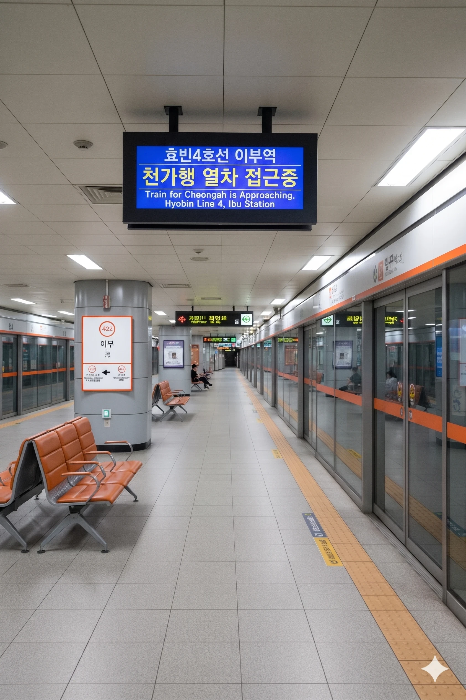

효빈 도시철도 4호선 402번 역이다. 효빈광역시 남구 평당동 332-2에 위치하고 있다.
4호선 남구 구간 중에서 2003년 개통 당시에는 없었던 역이다. 본래 해운산업지구 연장은 2011년 개통 예정이었으나, 윤대환 전 시장 시정의 철도 정책 백지화 크리로 인해 공사가 지연되었고, 결국 2015년 5월 31일이 되어서야 뒤늦게 개통했다. 역시 행정가가 누구냐에 따라 운명이 갈린다.
|
4
이부역 출구 정보
|
||
|---|---|---|
| 번호 | 주요 시설 및 방향 | 비고 |
| 1 | 평당하나리움아파트, 평당도뮤토아파트 | |
| 2 | 평당3동 행정복지센터, 아쿠아몰 평당점 | |
전반적으로 이용객이 꾸준히 늘어나는 추세다. 아쿠아몰 영향이 좀 있는 듯.
| 이부역 이용객 통계 | ||
|---|---|---|
| 연도 | 일평균 이용객 | 비고 |
| 2020년 | 5,901명 | |
| 2021년 | 5,961명 | |
| 2022년 | 6,852명 | |
| 2023년 | 7,064명 | |
| 2024년 | 7,282명 | |

| 해운산업지구 ↑ | ||||
| 하 | ㅣ | ㅣ | 상 | |
| ↓ 남구청 | ||||
| 상 | 4 효빈 도시철도 4호선 | 해운산업지구 방면 |
| 하 | 4 효빈 도시철도 4호선 | 천가 방면 |
5, 19, 29, 191, 291, 292, 791, 793, 891
05-1, 91, 92, 911, 921, 922, 791, 793, 891